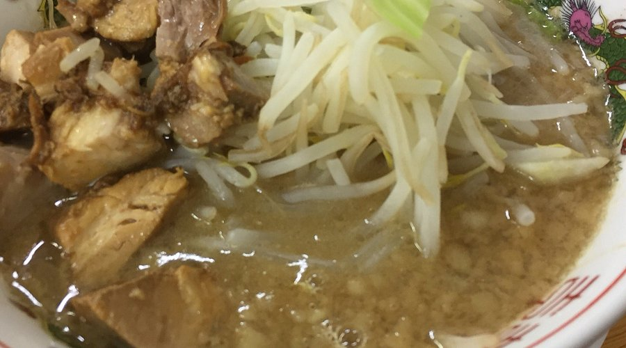
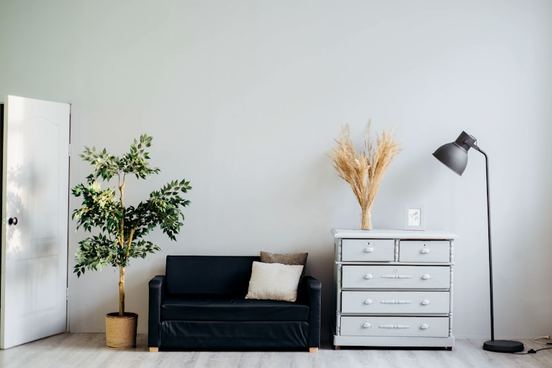
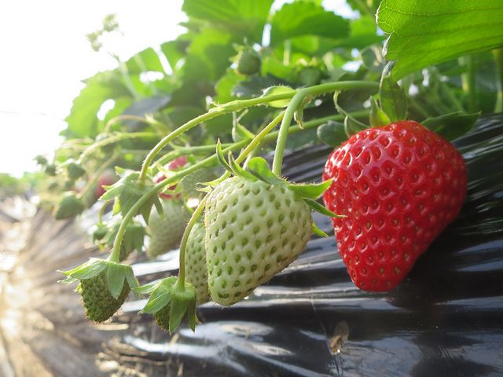
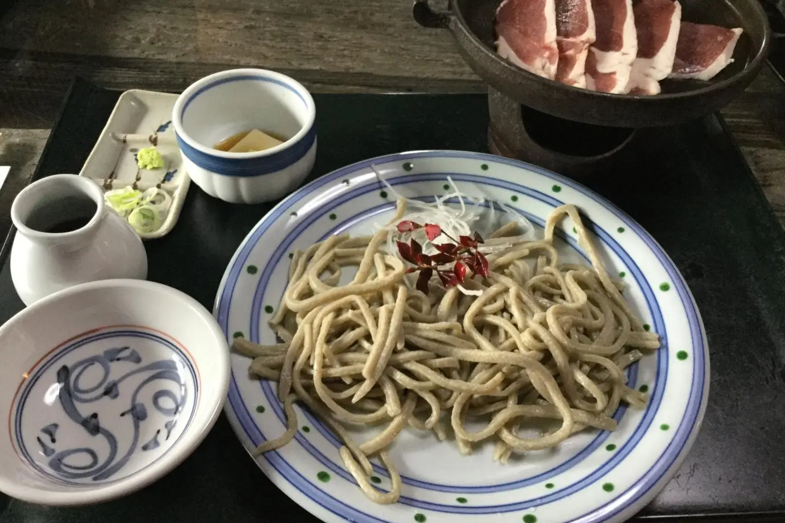
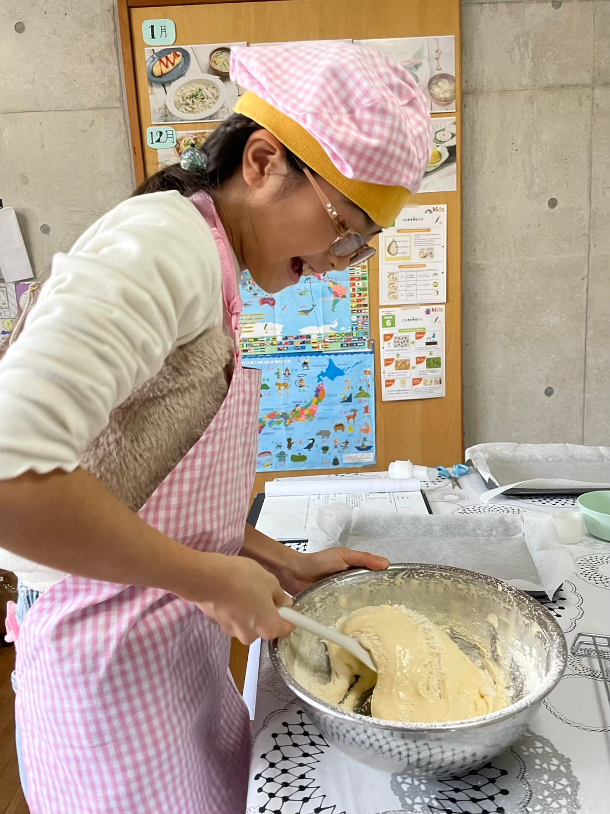

1. ร้าน Ramen Tatsuro (ラーメン龍郎)
ร้านราเมนสไตล์ Jiro-inspired ยอดฮิตที่สุดในเมืองทซึคุบะ โดดเด่นด้วย Miso Ramen เข้มข้น หมูชาชูชิ้นหนาพิเศษนุ่มละลายในปาก ผักกะหล่ำปลีและถั่วงอกพูนชาม น้ำซุปกระดูกหมูหอมกลมกล่อม สามารถเลือกปรับปริมาณกระเทียมและไขมันซุปได้ฟรี

2. เนื้อวัวฮิตาจิ (Hitachi Beef) & หมูทซึคุบะ (Tsukuba Pork)
สัมผัสรสชาติเนื้อวัววากิวเกรดพรีเมียมประจำจังหวัดอิบารากิ "Hitachi Beef" ลายหินอ่อนละมุนนุ่ม ลิ้มลองได้ในรูปแบบสเต๊ก สุกี้ยากี้ หรือยากินิคุ รวมถึงเนื้อหมู Local Tsukuba Pork ไร้กลิ่นคาว เสิร์ฟในคอมเพล็กซ์ BiVi Tsukuba ติดสถานีรถไฟ

3. Kawarakeya Strawberry Farm (かわらけや いちご狩り)
ฟาร์มสตรอเบอร์รี่เรือนกระจกยกระดับความสูง (Elevated Hydroponics) สดสะอาด ไม่ต้องก้มเก็บ ทานสดๆ ไม่จำกัดปริมาณพร้อมนมข้นหวาน 45 นาที ไฮไลต์น่ารักสำหรับเด็กๆ คือโซนเลี้ยงและให้อาหารน้องแพะตัวน้อย 🐐

4. Soba Shin Ida (蕎麦 Shin 飯田) & เมนูเชิงเขา
ร้านโซบะทำมือระดับตำนานเชิงเขาสึคุบะ นวดและสไลซ์เส้นโซบะสดวันต่อวัน เสิร์ฟพร้อมน้ำซุปร้อนและเป็ดปิ้งย่างหอมเตาถ่าน นอกจากนี้บริเวณจุดพักยอดเขายังมีร้าน 877Stand เสิร์ฟกาแฟลาเต้ ซอฟต์เสิร์ฟนมสด และอุดอนผักเขา (Sansai Udon)

5. Aozora Kitchen (青空キッチン)
สถาบันโภชนาการและเวิร์กชอปทำอาหารสำหรับเด็ก ออกแบบให้เด็กๆ สนุกกับการลงมือเตรียมวัตถุดิบ เรียนรู้คุณค่าสารอาหาร และปรุงอาหารทานเองร่วมกับครอบครัว